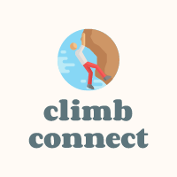
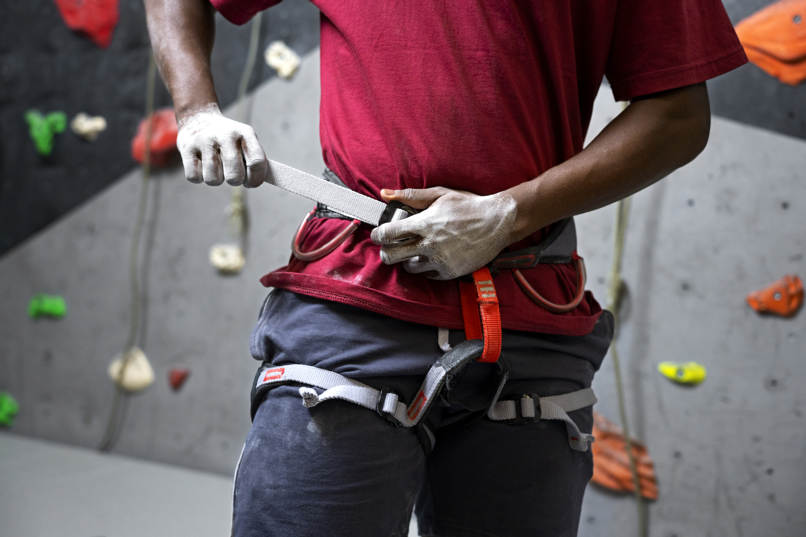
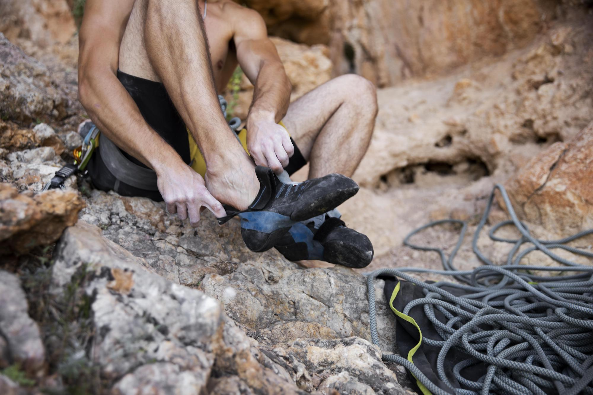
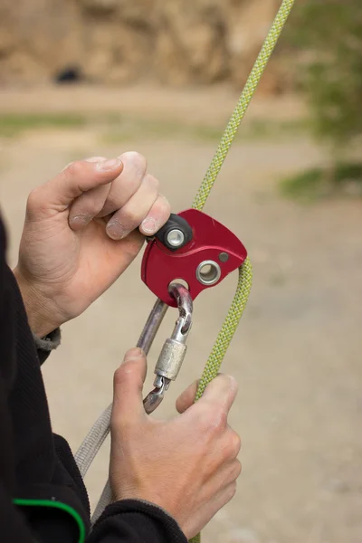
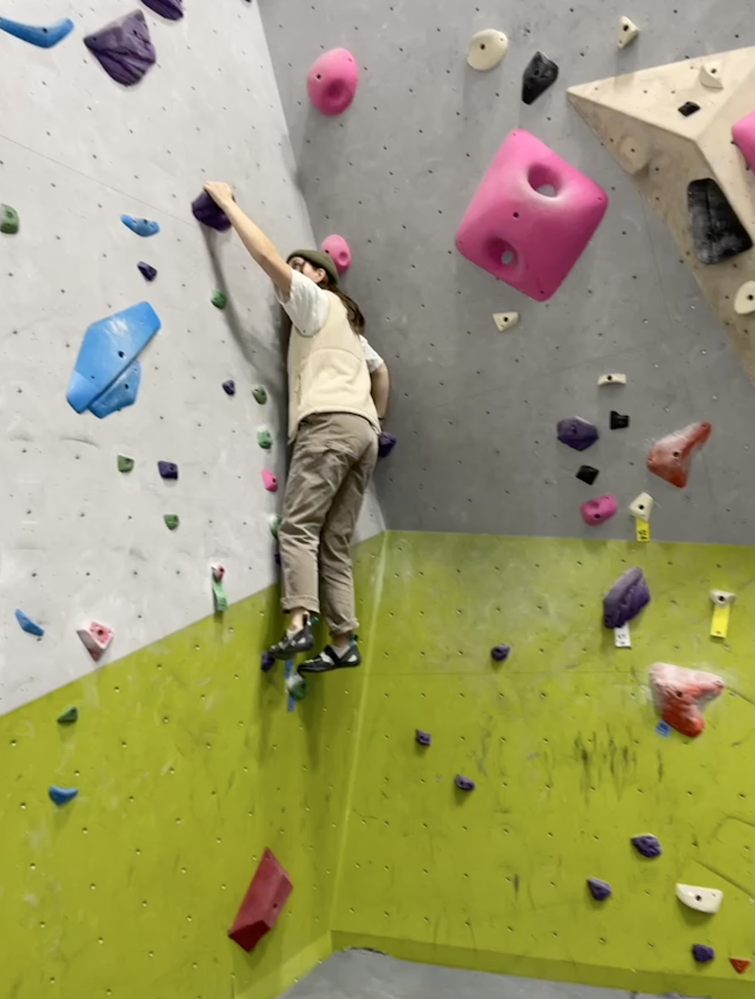
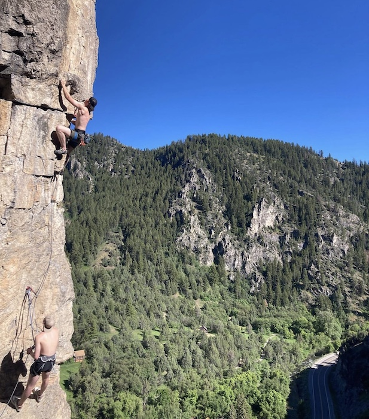

Overview
Purpose
Do you have a strong desire for an amazing rock climbing experience and a drive for reaching new heights? Look nowhere else! ClimbConnect is a website designed specifically for climbers like you.
Audience
Discover a community of climbers with ClimbConnect, from novices to seasoned experts, who are all united by a passion for the vertical world.
Branding
Website Logo
Style Guide
Color Palette
Palette URL: https://coolors.co/aed6f1-aabd8c-e66138-5d757c-fffaf5| Primary | Secondary | Accent 1 | Accent 2 |
|---|---|---|---|
| #AED6F1 | #aabd8c | #e66138 | #5d757c | #5D757C |
Typography
Heading Font: Quicksand
Paragraph Font: Arvo
Normal paragraph example
With extensive resources, which include route maps, training advice, and gear suggestions you could realize your full potential. Connect with other climbers and post pictures of your remarkable ascents. In our interactive forum, stay current on recent climbing news, forthcoming activities, and gear releases.
Colored paragraph example
Want a climbing partner? You will be matched with other like minded people using our sophisticated matching process.Whether you're seeking thrilling outdoor climbs or want to hone your skills in an indoor gym, ClimbConnect has got you covered. Take your climbing journey to new heights where rock climbing comes alive!
Navigation
Site Map
Content
Home page
Our website is made to assist you in taking your climbing experience to new heights, whether you're an experienced climber looking for new challenges or a novice ready to pick up the ropes. We at Climb Connect are aware of the excitement and passion that propel climbers to overcome difficult vertical terrain. For this reason, we've developed a center where climbers can interact, exchange stories, and access a variety of knowledge to improve their climbing endeavors. Climb Connect promotes a thriving community where climbers may interact with like-minded individuals. Therefore, whether you're an expert climber searching for the newest gear suggestions or a novice wanting to develop your skills, Climb Connect is your one-stop destination for all things rock climbing. Join us today, and let's embark on a thrilling journey together as we scale new heights and forge unforgettable memories on the vertical playgrounds of the world.
Images for the Home page


Gear suggestions
One of the first steps to becoming a successful climber is having the right gear. Now these items don't need to be the most expensive ones out there, but here at Climb Connect we recommend good quality over everything else… Here are the essentials for everything you need as a beginner climber! Rock Climbing Harness, Climbing Shoes, Belay Device, Locking carabiner, Chalk bag and chalk. You'll need a climbing harness unless you're bouldering. Your waist and thighs are put in a rock climbing harness, which enables you to belay your companion and attach to the rope safely for climbing and rappelling. Make sure you purchase a brand-new harness for safety and comfort from a trustworthy supplier. Early climbers wore mountaineering boots, but today we wear rubber shoes that are light and snug. These provide you a greater grip on the rock and help you to wedge your toes into tight spaces to get better grips. The appropriate size of climbing shoes might appear too tiny because of how snugly they fit. It's likely that you'll be climbing with a partner at first. after it's your turn to stay on the ground and belay your partner as they climb, you'll feed the rope through your belay device after it is fastened to your harness. You'll also feed the rope through it when you're rappelling back down the rock after a climb. These are typically composed of aluminum and available in both easier manual braking variants as well as more difficult assisted braking systems that do some of the work for you. You'll need a locking carabiner to secure your belay device to your harness, and you'll probably want another one to secure your chalk bag as well. A little D-shaped piece of metal with a locking gate is known as a carabiner. You'll want extra carabiners as you begin lead climbing and setting up your own anchors. A chalk bag is just a little canvas bag with a loop that often fastens to the rear of your harness with a carabiner so you can reach back and collect some chalk if your hands start to sweat heavily. The chalk also helps give some grip to your hands and whatever surface you may be climbing. Loose chalk that is sold in resealable packages is known as climbing chalk. Before leaving the house, you can pour a bit inside your climbing backpack.
Images for the gear suggestions page
  
Training advice
Whether you're completely new to the climbing world, or have trained seriously for several years to master a craft, there are sound principles that have been proven to work which you can implement into training. No matter your training plan the key to success is sticking to whatever you have your mind set towards. Here are five ways you can train efficiently for the best results. 1. Local Endurance… Local endurance is the capacity to climb simple terrain for an extended amount of time without feeling like too much energy was expended. ARC training is the most well-known type of regional endurance training for climbers. The purpose of ARC training is to increase the microscopic blood vessels in your forearms. You'll actually increase the number of little blood vessels in your body and widen the ones that are already there if you climb a lot of terrain below your limit. Both adjustments will make it more difficult for a pump to develop, allowing you to climb further and recover more quickly. Implement 15-45 minutes of ARC training weekly to see significant results in your climb. 2. Train for stronger fingers…Before each climb actively work your hands and fingers. Begin by going to a hangboard and hanging from the smallest hole solely by your fingertips for five seconds. 3. Improve Explosive power…Power is defined as the pace at which you can exert force, or the capacity to make a difficult maneuver rapidly. Consider huge throws, deadpoints, and dynos.To improve these begin with single arm hangs for about 2-5 seconds. Let your arm hang and hold the weight of your body.
Images for the training advice page
 
Wireframes
Create three wireframes for your site. One for each page and list them here
Home
[Any additional details about home that the wireframe does not make clear]
Gear suggestions
[Any additional details about page 2 that the wireframe does not make clear]
Training advice
[Any additional details about page 3 that the wireframe does not make clear]